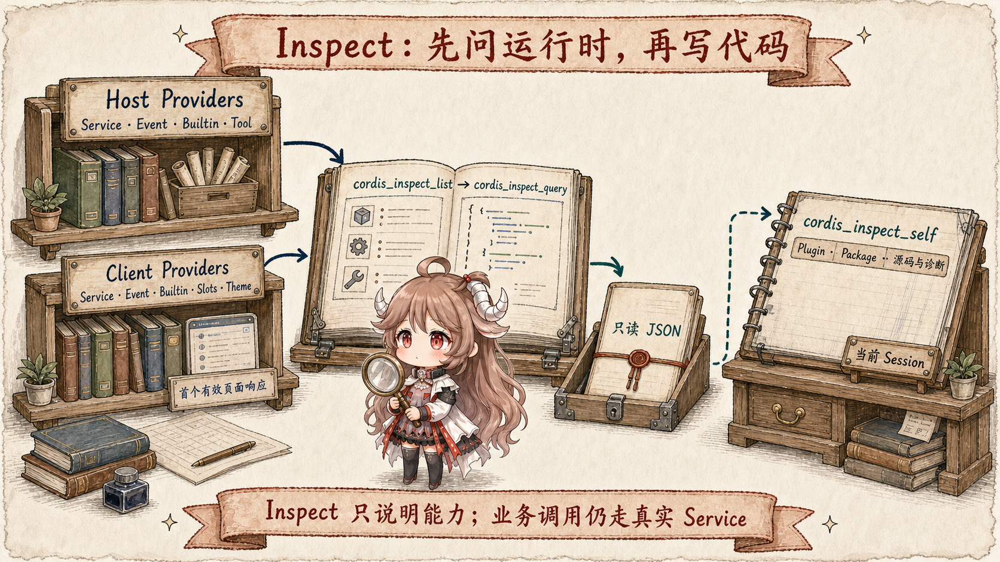
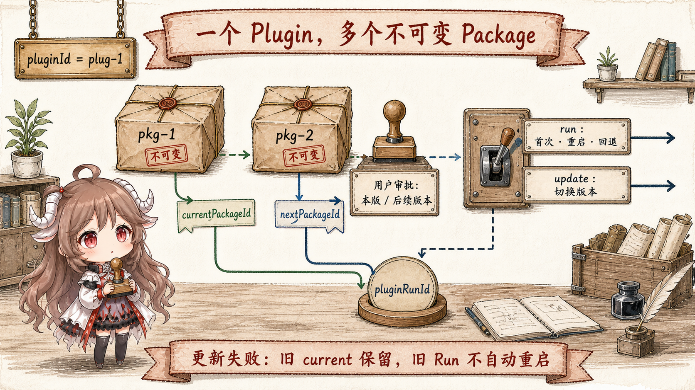
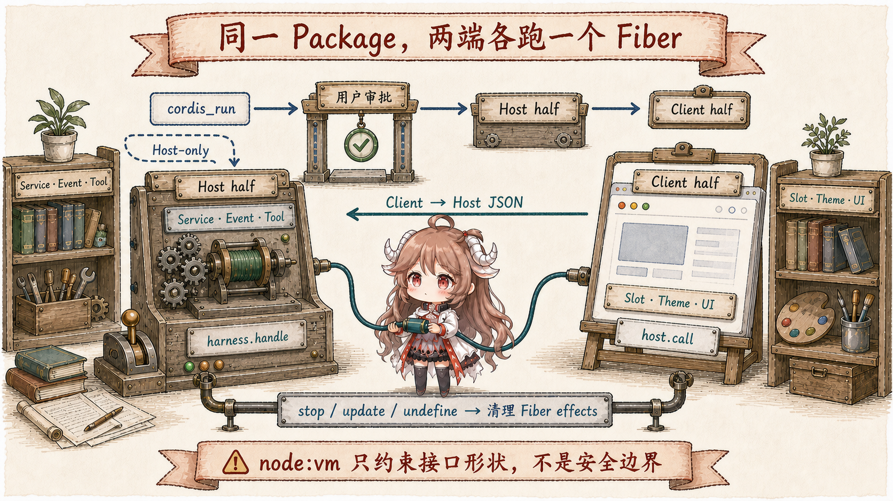

普通工具把一次调用交给预先存在的实现；动态 Cordis 插件允许模型临时创造实现本身。它可以消费 Service、监听 Event、注册新工具，也可以在浏览器 Slot 中加入 UI。于是问题不再只是“代码能不能跑”，而是：模型依据什么接口写代码；哪一个版本正在尝试；谁批准浏览器半边；失败后指针和旧运行怎样处理；重启以后还有没有这段能力。
阅读契约。读完以后，你应该能解释七个 cordis_* 工具为什么分成三类 Inspect、四个生命周期动作；pluginId、packageId、pluginRunId 与两个版本指针各自代表什么；为什么 cordis_define 成功不等于代码已执行；Host-only 与 Client-bearing Package 的审批差异；以及 cordis_stop 和 cordis_undefine 为什么不能互换。
证据边界。本文固定在提交 b150a55。这一快照里，包级 README 的开头仍描述旧的五工具接口，但同一提交中实际注册工具的源码与 freshness-gated 的生成工具目录已经是七工具协议。下文以可执行源码和生成契约为准，并把这种漂移本身视为源码阅读时必须交叉验证的信号。
一、七个工具不是七个任意入口
1.1 Inspect 先建立可写代码的真实边界

cordis_inspect_list 返回 Provider manifest，而不是扫描一个随意可调用的对象。Host 内建 Service、Event、Builtin、Tool；Client 同步最近一份 Service、Event、Builtin、Slots、Theme 目录。每个 Provider 明确声明只读 method 及输入输出 JSON Schema。
cordis_inspect_query 只能使用 list 返回的 platform、provider 和 method。Host query 在本地执行；Client query 广播到页面，等待第一个通过 schema 验证的回答，直到页面回答或 tool call 被取消。它描述能力、签名、Slot 树和 token，不会替模型调用业务 Service。这个分离阻止“反射目录”悄悄变成一个万能写接口。
cordis_inspect_self 看的是当前 Session 自己创建的动态对象：无 ID 只列 Plugin 摘要；给出 pluginId 才看到 Packages、版本指针和最近 Run；再给出 packageId 才返回那份不可变源码与运行诊断。外部能力目录与自身生命周期状态因此是两条独立的只读路径。
1.2 “Inspect before define”是正确性协议，不是提示词礼貌
动态代码没有 TypeScript、JSX、import 或 bundler 转换。Host 与 Client 各自只拿到明确提供的 builtins 和经 inject 声明的 Service；Client UI 还必须注册到真实存在的 Slot。若模型猜测 API，最乐观的结果是 guard 报错，最糟的结果是把错误依赖写进一个等待中的 Fiber。先读紧凑目录、再读精确契约，是把运行时事实转成可执行源码的必要步骤。
二、Plugin 是身份，Package 是不可变版本
2.1 Define 只编译语法并登记源码

cordis_define 的 new 模式只接受 3–6 个小写英文字母作为语义前缀，Host 再分配稳定 pluginId；existing 模式必须命中当前 Session 已有的精确 ID。每次 define 都追加一个新的 packageId，至少包含 Host 或 Client 一半源码。旧 Package 不会被覆盖，修改等于追加版本。
define 会 trim 元数据，并把两半源码编译成函数体做语法预检；它不调用 apply，不请求审批，不改变 currentPackageId。所以对话里的 define card 只表示“这份源码已登记且尚未运行”，不是部署回执，也不能让进程重启后自动恢复定义。
2.2 三类 ID 和两个指针把意图与事实分开
pluginId 是可持续修改的逻辑插件；packageId 是某一份不可变 Host/Client 源码；pluginRunId 是一次激活尝试，串起审批、两半加载、私有 RPC 与错误。currentPackageId 只在完整激活成功后提交，nextPackageId 保存正在审批、启动或最近失败的目标。
run 模式用于第一次激活、重启当前版本，以及失败更新后重新运行 current 来回退；当已经有 current 且目标是不同 Package 时必须用 update。更新先停止旧 Run，再启动目标；目标失败不会篡改 current，但也不会自动复活旧 Run。系统保留旧 current 与失败 target next，让调用者显式重试 update 或用 run 启动 current。
三、审批保护的是 Client-bearing 激活，不是 define
3.1 Host-only 直接启动；带 Client 的版本进入异步协议
Host-only Package 的 cordis_run 会直接走 Host 激活，没有浏览器审批请求。只要 Package 包含 Client 半边，且当前 Package 没有一次性 grant、Plugin 也没有 future-version grant，run 就分配 approval request，返回 awaiting-approval。用户可以只批准这一个 Package，也可以批准这个 Plugin 的后续版本。
已授权的 Client Package 返回 starting，而不是 running。页面随后按 Host half → 拉取 Client source → Client half 的顺序异步编排；最终成功、拒绝或技术失败通过 Run 状态与 steering context 回到 Agent。模型不能把 tool result 的“starting”误报成完成，也不能在用户拒绝后不断重发审批。
3.2 授权与激活状态不能合成一个布尔值
一次审批 grant 在技术失败后仍有效，因为用户授权的是代码版本，不是某次网络顺利。相反，pluginRunId 每次尝试都不同，旧页面对过期 Run 的回答不能提交新状态。latestRun 还保留 Host/Client half 的 pending、running、waiting、failed 与具体 phase，修复流程因此是 inspect exact source/diagnostic → 在同一 Plugin 下 define 新 Package → 再 update，而不是新造一个身份逃避错误。
四、一份 Package 横跨两个 Cordis 运行时
4.1 Host 与 Client 都返回 Plugin，都由 Fiber 回收

Host 源码在 DSH Node.js 进程的 node:vm context 中作为普通 JavaScript 函数体求值，必须返回 Cordis Plugin。Runner 给它受限 Context façade，并把它挂到 cordis-dynamic group fiber；注册的 Event、Service、Tool、timer 与 handler 都应由 Fiber effect 拥有，stop/update/undefine 才能等待 quiescence 后完整撤销。
Client 源码在浏览器以 async function body 求值，拿到 React、styles、host、tagged console 等显式符号；guard 只暴露插件通过 inject 声明的服务。它同样进入 loader 和 Cordis Fiber，所以 Slot、style 与 theme override 不需要另建一套生命周期。
跨边界只有 Package-private 的 Client → Host JSON RPC：Host 用 harness.handle(method, handler) 注册，Client 用 host.call(method, args) 调用。function、undefined、class instance 等非 lossless JSON 值会被拒绝；没有通用 Host → Client 调用面。
4.2 node:vm 是 API shaping，不是敌对代码沙箱
runner 去掉或重定向常见 Node globals，Host façade 也不暴露 Cordis 内部结构；这能抑制无意误用，却挡不住恶意代码借 host-realm helper 逃逸。默认 vmTimeoutMs: 5000 只限制同步求值，async body 可以越过它。源码因此明确要求把这组工具当成 Bash 级能力，并且它不在任何 shipped composition tree 中，部署必须显式 opt in。
五、停止、删除与重启是三个不同结局
5.1 Stop 撤销运行，Undefine 撤销身份
cordis_stop 取消未完成审批或激活，撤回页面 Client half，并 dispose Host Fiber；重复停止是幂等成功。它故意保留 Plugin、每个不可变 Package、审批 grants、currentPackageId 与 nextPackageId，因此可以稍后 restart、retry 或 rollback。
cordis_undefine 是永久删除：先取消 pending、停止 active Run，再移除整个 Plugin record、Packages、grants 和版本指针。@pluginId 引用与业务 view 随即失效，历史卡片只剩“Plugin removed”的记录。要暂时关闭副作用时调用 undefine，会白白丢失所有修复和回退上下文。
5.2 Process-local 不等于无影响
DynamicCordisRegistry 只是进程内 Map。DSH 重启后 definition、grants、run 与指针全部消失，不会从 Session history 自动重放；它也不写 Plugin 文件、不修改 cordis.yml、不自动升级成仓库代码。真正值得保留的实验仍要进入普通开发、评审和部署流程。
控制权与可见性按 Session 所有：另一个 Session 不能 inspect、run、stop 或 undefine 这份 Plugin。但已经运行的插件接入的是真实 runtime，它注册到共享 scope 的 Service、Event 或工具可能影响同一进程里的其他会话。Session-owned 是管理边界，不是天然的效果隔离。
六、自指运行时真正改变了什么
- 它把扩展开发缩成一个可撤销事务。Inspect 建立契约，Define 保存不可变候选，Run 产生显式尝试，Fiber 负责回收。
- 它没有跳过版本管理。不可变 Package、current/next 指针和独立 run identity，反而比“直接 eval 一段字符串”多了一层状态纪律。
- 它没有把人类审批泛化成安全证明。审批只覆盖 Client-bearing Package 的授权路径；工具本身仍是显式 opt-in 的 Bash 级能力。
- 它把异步结果当成一等状态。
awaiting-approval、starting、half-level diagnostics 与 steering，避免前台 tool call 假装等待浏览器完成。 - 它适合临时运行时成果，不适合永久交付。页面实验、诊断面板和短期工具可以动态完成；需要跨重启、可审计、可发布的能力应转成静态 Plugin。
- 生成契约比叙述文档更接近事实。这一提交里的 README 漂移说明：分析快速演进的 Agent runtime，必须同时核对生成 catalog、注册源码、状态机与测试。
到这里，七篇路线闭环了：从一条 dsh web 启动主线进入 Cordis 组合，再经过事件会话、副作用检查点、压缩重建、多 Agent 所有权，最终回到一个能检查、扩展并撤销自身运行结构的 Cordis runtime。DSH 最值得研究的地方不是工具数量，而是它不断把“谁拥有状态、何时可以执行、失败后怎样恢复”写成可组合的协议。
参考源码
- 生成工具目录 与 tool-cordis 注册源码：七工具 schema、分层 self inspection、define/run/stop/undefine 契约。
- Host Inspect Providers 与 Client Inspect Providers：Service/Event/Builtin/Tool、Slots/Theme 与渐进式精确查询。
- 动态 Registry 与 Host Runner：Plugin/Package/Run identity、grants、current/next 指针、审批和状态迁移。
- Inspect Registry：Host 本地查询、Client manifest mirror、first-valid-response 与取消。
- Client Runtime、Client Guard 与 模型协议：双端 Fiber、JSON RPC、审批语义、安全姿态与修复流程。